Fecha
12 de septiembre de 2026
Apertura del castillo a las 17:15 h para visita y fotos. Ceremonia a las 18:00 h.
Boda de Ismael & Juangui
12 de septiembre de 2026 · Castillo de Guadamur, Toledo
El océano nos separaba, la Gran Vía nos unió y Madrid hizo el resto.
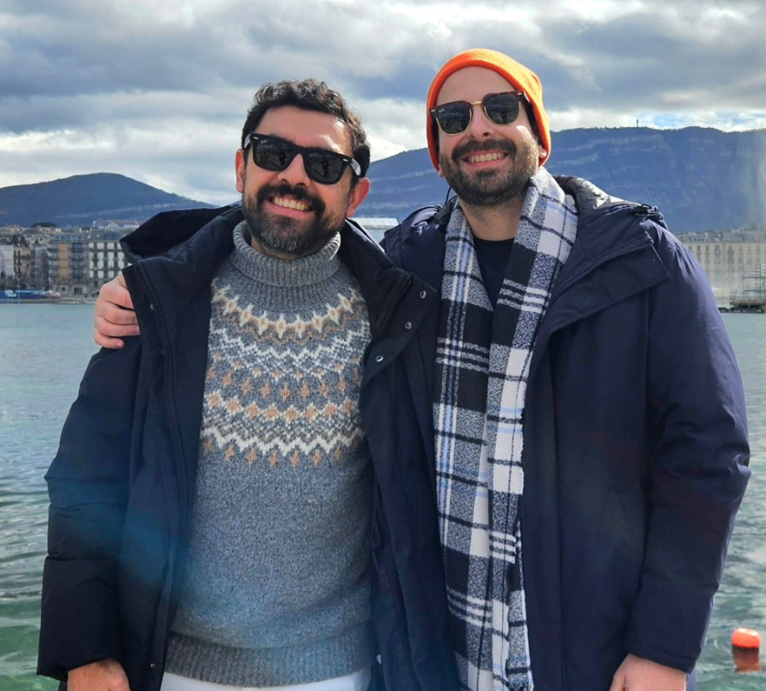
Nuestra historia
El océano Atlántico los separaba, la Gran Vía los unió y Madrid hizo el resto. Lo suyo empezó a la salida de los probadores de Zara, entre moda, intuición y esa clase de encuentros que luego parecen escritos.
Juan vive la moda. Ismael no se pierde un evento. Juntos han creado una noche para celebrar, arreglarse y ver brillar a los suyos.
Una boda en un castillo. Una pequeña gran Met Gala. Y muchas ganas de hacer historia.
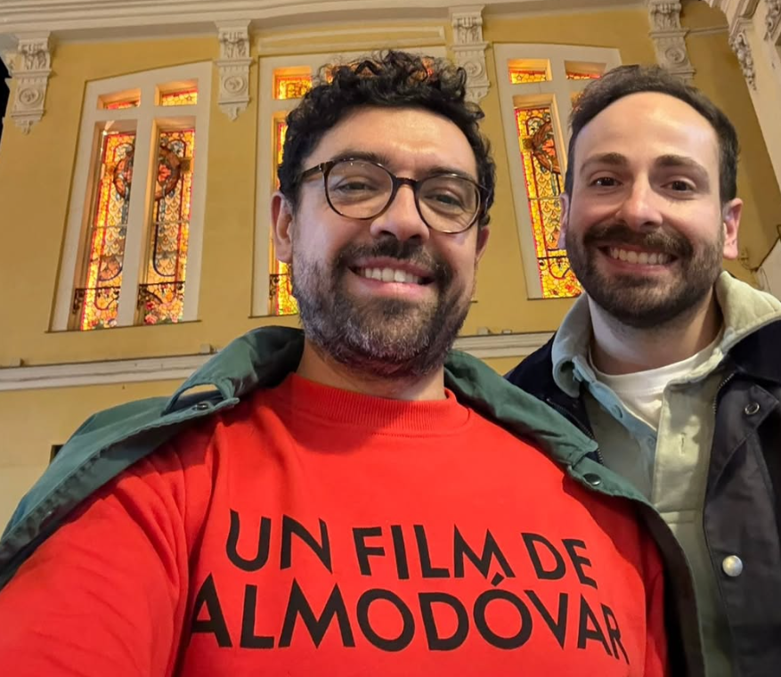
El lugar
Una fortaleza histórica en Guadamur, Toledo, convertida por una noche en escenario de celebración. Piedra, torres, atardecer y una fiesta pensada para vivirse como una gran entrada de gala.
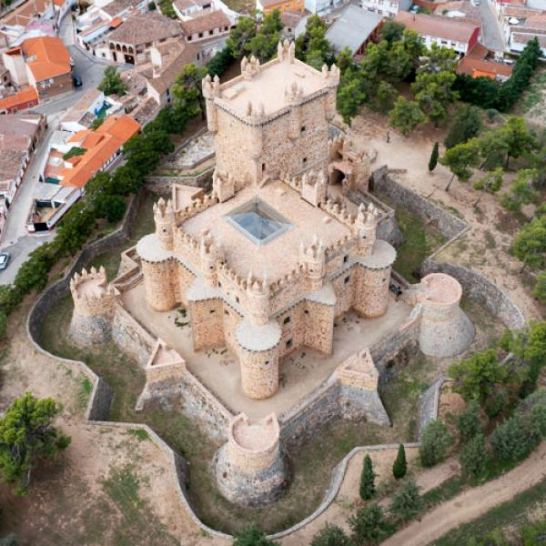
Fecha
Apertura del castillo a las 17:15 h para visita y fotos. Ceremonia a las 18:00 h.
Lugar
Un castillo histórico en Toledo para celebrar la ceremonia, el cóctel, la cena y la fiesta.
Programa
La noche
Una tarde para llegar con calma, hacerse fotos, brindar, cenar y terminar la noche como merece: con música, barra libre y muchas ganas de celebrar.
Visita y fotos antes de la ceremonia.
La ceremonia, el momento central de la tarde.
Cóctel y cena en el castillo.
Barra libre, DJ María Latina y DJ Linapary para una noche con ritmo.
Música
La noche contará con DJ María Latina y DJ Linapary para llevar la celebración del castillo a la pista.
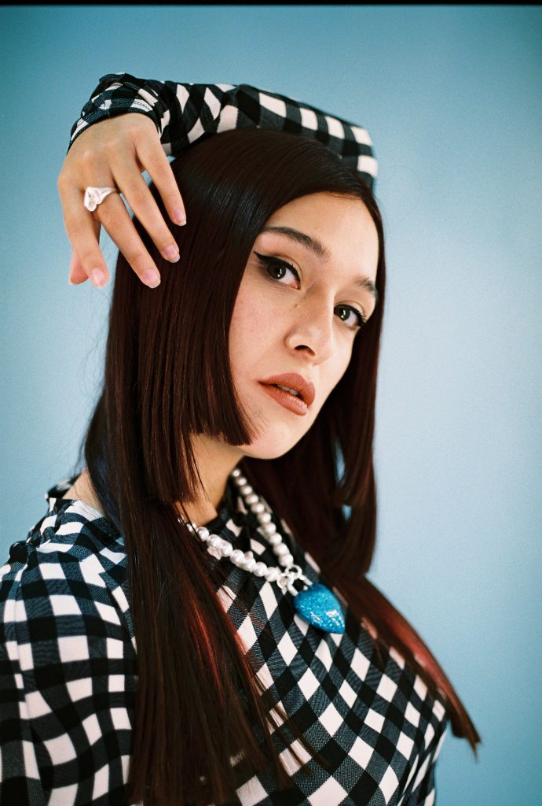
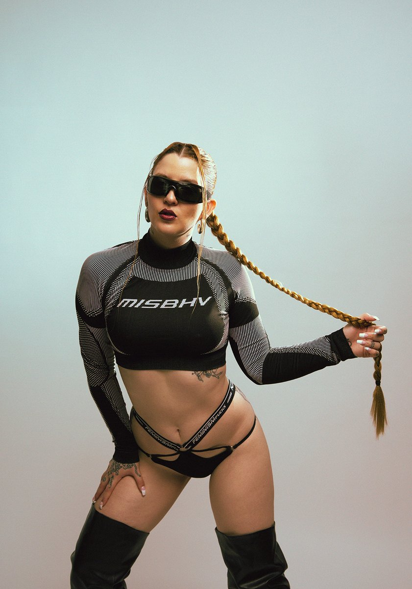
Dress code
No se trata de seguir reglas, sino de romperlas con clase.
Queremos looks elegantes, creativos y con personalidad: magia, textura, brillo medido y carácter.
La inspiración es Met Gala, pero llevada a una noche de castillo: desde lo sobrio impecable hasta lo más teatral, siempre con un guiño creativo.
Evita blanco, marfil y tonos demasiado nupciales.
Elegancia, arte y buen rollo.
09
Arte
Textura
Brillo medido
Carácter
Fantasía
Buen rollo
Inspiración
Una noche para interpretar el estilo con libertad: desde lo sobrio impecable hasta lo teatral, siempre con elegancia.
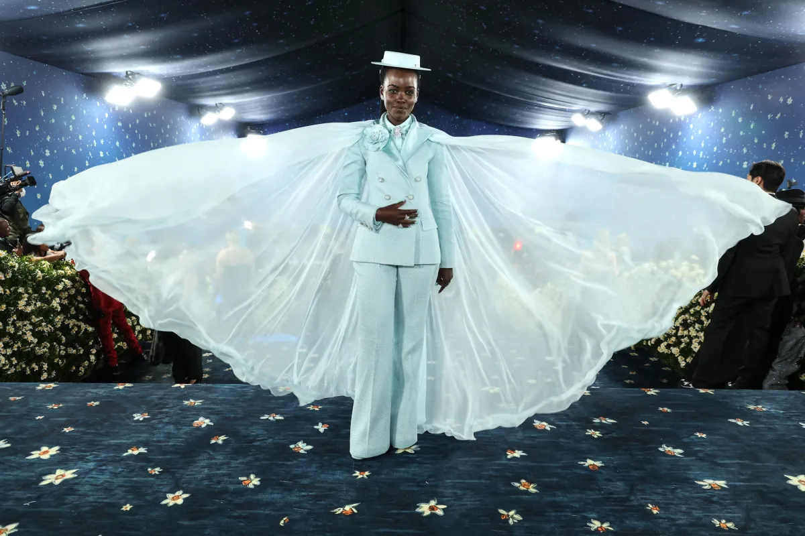
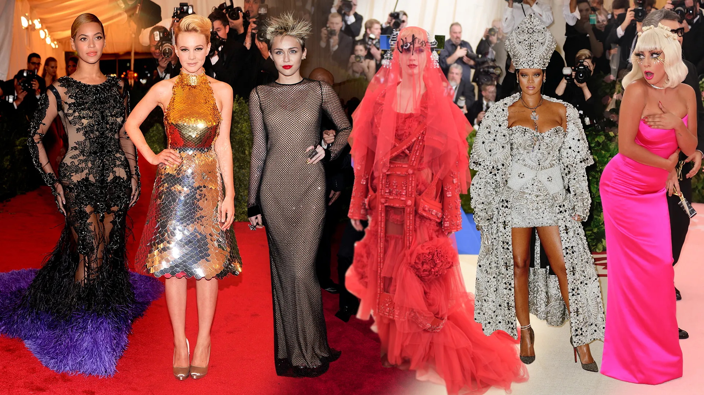
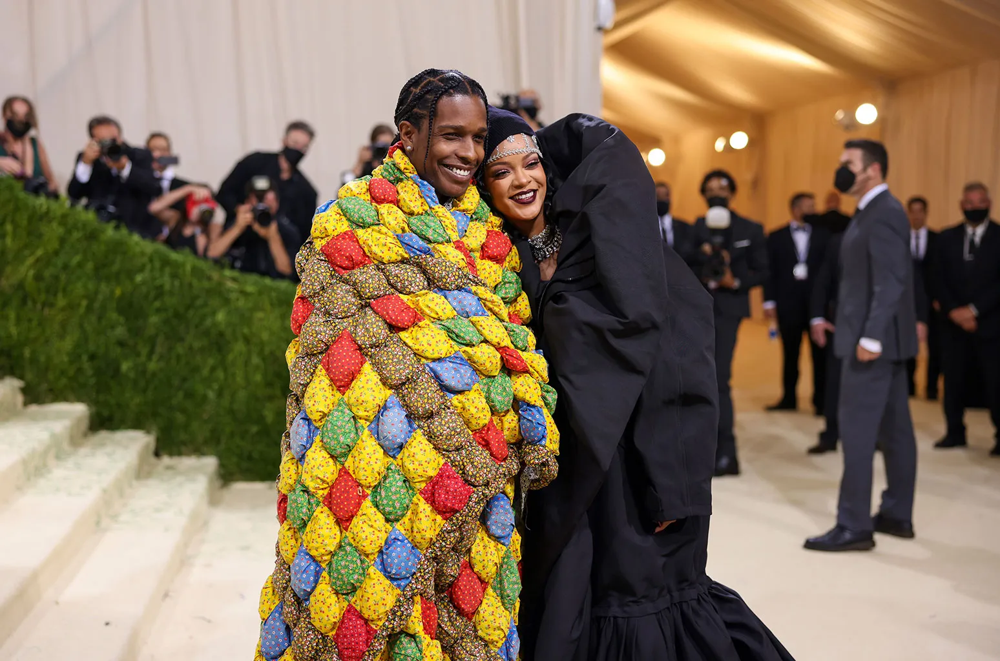
Galería
Compartid vuestras fotos y recuerdos con #ismaelyjuangui
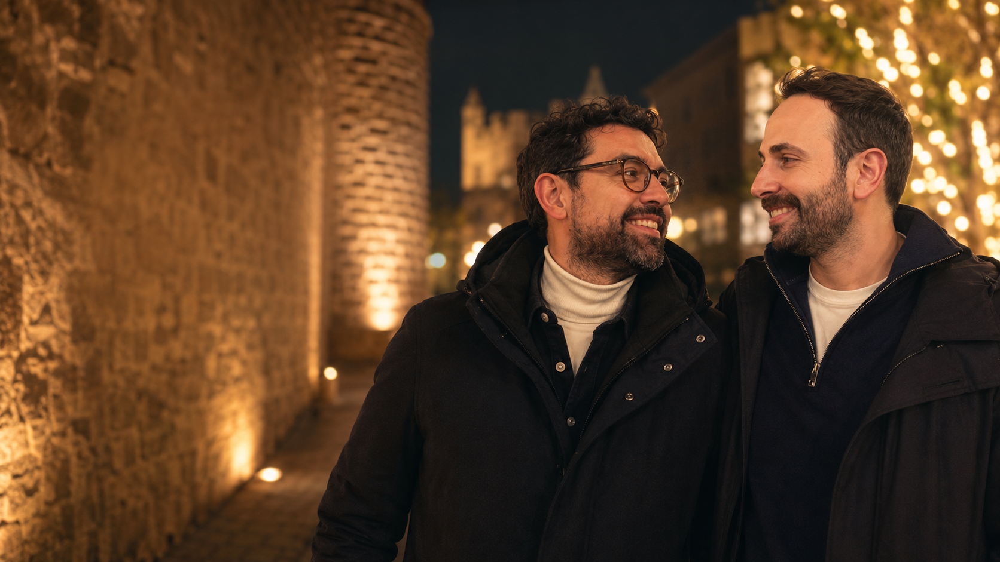
Porque muchas historias también empiezan alrededor de una mesa.
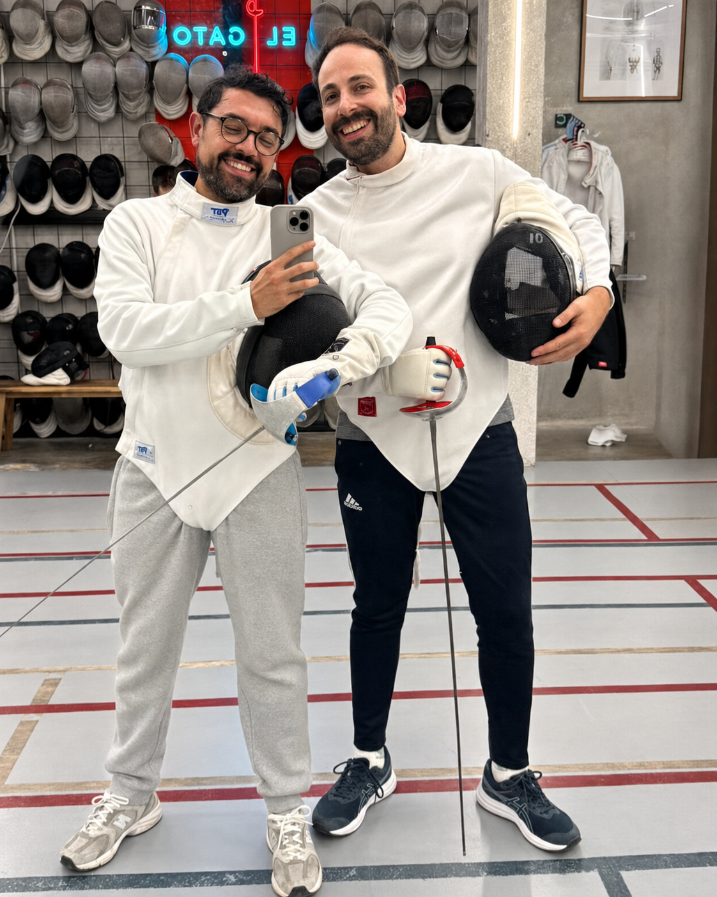
Han sobrevivido incluso a una clase de esgrima. La boda será fácil.
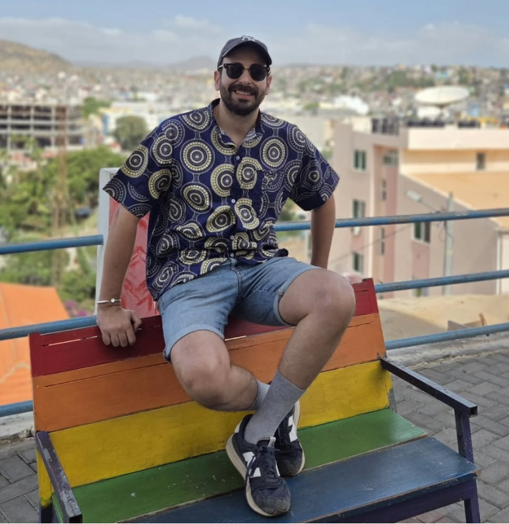
Estilo propio, viajes y cero ganas de pasar desapercibidos.
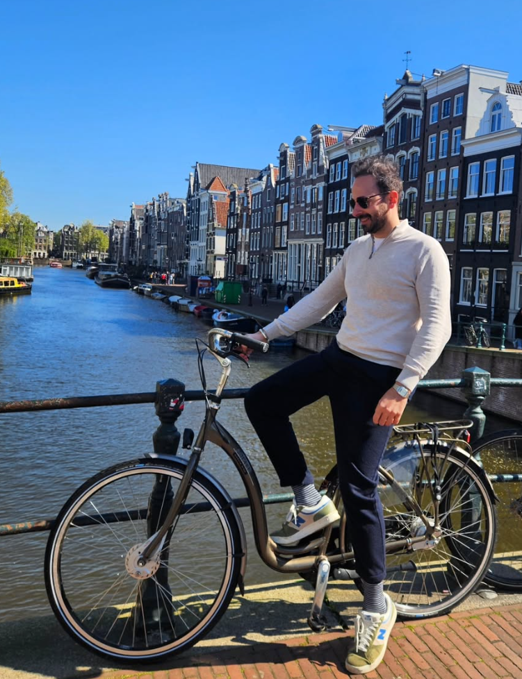
Para seguir descubriendo el mundo juntos.
Confirmación
Por favor, confirma tu asistencia para ayudarnos con la organización de mesas y la celebración.
Juangui
Confirmar con JuanguiIsmael
Confirmar con IsmaelRegalos
Nuestro mejor regalo sois vosotros. Si aun así queréis tener un detalle con nosotros, escribidnos y os pasamos la información. Será para seguir descubriendo el mundo juntos.
Preguntas frecuentes
Si tu invitación incluye acompañante, confírmalo con nosotros para organizar bien las mesas.
En la guía completa encontrarás la inspiración, los colores recomendados y los detalles que conviene evitar.
Si hay recomendaciones de transporte o alojamiento, las añadiremos aquí.